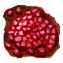

Багряный элемент
Предметы / С врагов
Открыть в интерактивной вики →
| Вес | 1 |
|---|---|
| Цена | 800 000 |
Описание
Необходим для усиления эффекта вампирского снаряжения
| Нужен для усиления вампирского эффекта снаряжения. |
Применение
|
Способы получения
|